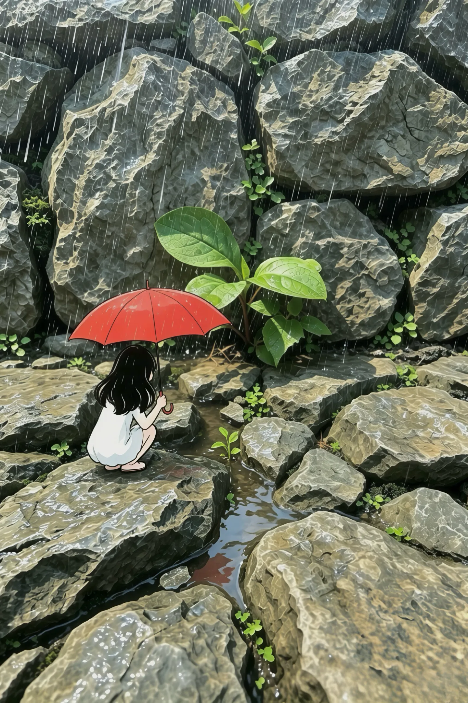
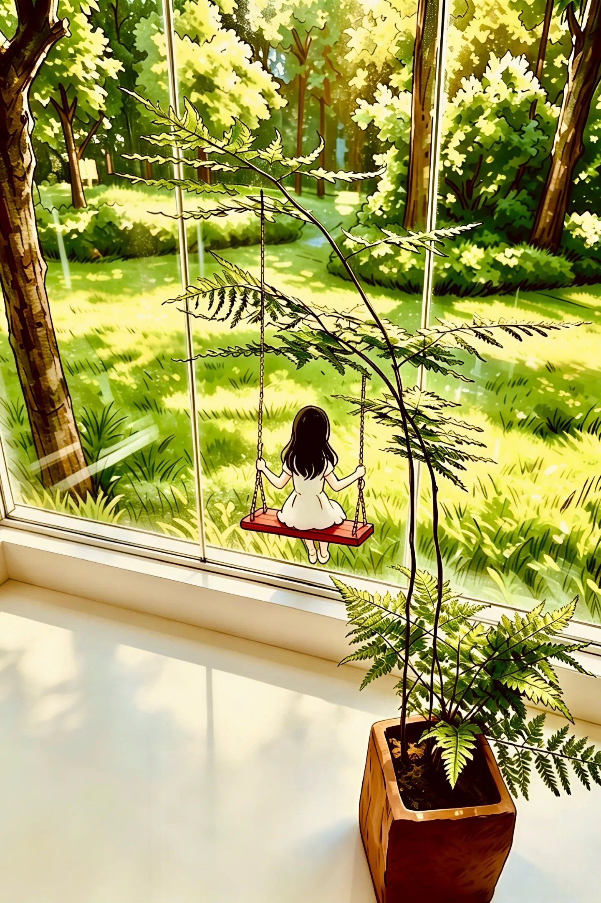
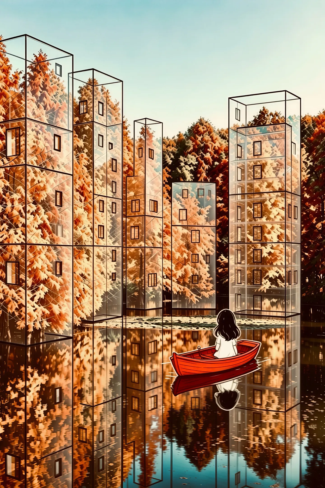
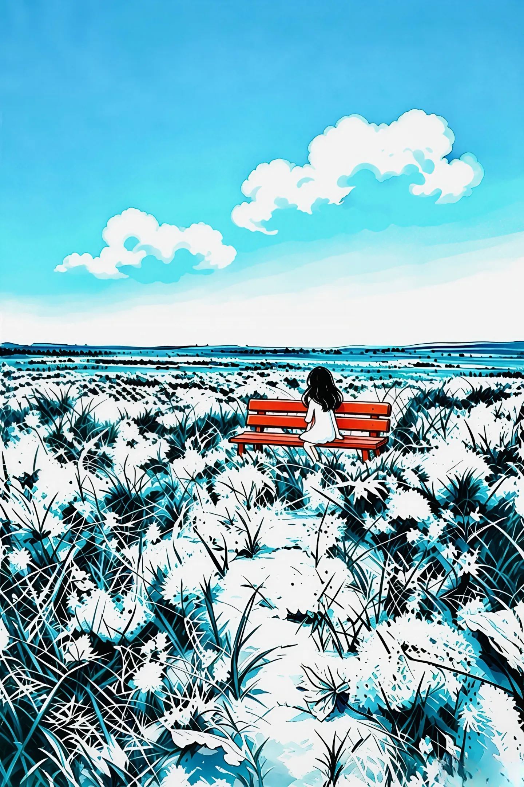

四季轮转，亦是人生轮转。春生、夏往、秋落、冬藏，草木的一次荣枯，恰如人的一生。本系列四张海报，以四季为载体，以少女与草木为双意象，完整复刻普通人从年少挣扎、青春向往、中年幻灭、晚年自洽的心境变化。将成长中的抗争、渴望、孤独与和解，凝练成四帧安静却有力量的画面，讲述一场所有人都必经的人生旅程。




画面：雨中石缝，女孩撑红伞蹲坐，石缝野草在雨里倔强生长
这是故事的起点，也是人生的序章。女孩被困在逼仄、湿冷的石缝之间，暴雨倾盆，岩壁湿滑，环境没有给她任何退路。她没有放弃，也没有崩溃，只是默默地撑开那把小小的红伞，在方寸之间，为自己守住了一片不湿的角落。一旁的野草也是一样：扎根在贫瘠的岩缝里，被雨水反复冲刷，却依旧挺直茎干，牢牢扒住岩石。不是轰轰烈烈的反抗，而是在绝境里不低头、不放弃的韧性。就像我们每个人起步的阶段：出身和环境无法选择，但我们可以守住自己的方寸之地，用一点点倔强，对抗生活的风雨。
画面：室内窗边，女孩坐在盆栽旁的秋千上，蕨类枝条拼命向窗外森林伸展
这是故事的转折，也是人生的少年心气。女孩从石缝里走了出来，却又被困在了一间小小的屋子里。她望着窗外洒满阳光的森林。绿植的根系被牢牢锁在花盆里，可枝叶却不顾一切地穿过窗沿，朝着旷野、朝着光亮疯长。她和这盆绿植，都被现实的"花盆"困住了，但谁也没停下向外生长的脚步。心里装着远方的人，永远不会被方寸之地困住。就像我们年轻时：被学业、被生活的条条框框束缚着，却依然心怀旷野，总想着要去外面的世界闯一闯。
画面：镜面楼宇间的河道，女孩划着红舟穿行，两岸是千篇一律的秋林
这是故事的幻灭，也是人生的清醒时刻。女孩终于划着小船，离开了那间小屋，来到了她曾经无比向往的"大世界"。可当她真正抵达，却发现这里并没有想象中的精彩：两岸的秋林长得一模一样，楼宇是镜面的倒影，风景重复又单调。她划了一路，身边始终只有自己，热闹的表象之下，是深入骨髓的孤单。我们拼尽全力奔赴的远方，很多时候不过是千篇一律的重复。见过了形形色色的人和事，才发现世界大同，曾经的满腔热血，也在一次次失望里慢慢冷却。
画面：无垠荒原，女孩坐在红色长椅上，望着晴空与流云
这是故事的终章，也是人生的和解。女孩不再撑伞，不再眺望，也不再划船。她停在了一片空旷的荒原上，就那样静静地坐着，看着风吹过，云飘过。曾经让她痛苦的困境、让她心动的远方、让她失落的幻灭，都成了过去式。荒原上没有一株草木，所有的挣扎、渴望、追逐，都在这里归于沉寂。但这不是死寂，而是一种通透的平静。放下了所有执念，内心终于变得澄澈、安宁。就像人走过大半生，终于不再向外索取答案，学会了和自己、和世界温柔相处。
年少时，在困境里咬牙撑伞，守住自己的一方天地，学会了执韧与接纳。
年轻时，心怀旷野，被现实困住，却依然向往远方，眼里有光。
中年时，终于奔赴了远方，发现世界大同，热闹表象下只剩孤单荒芜。
暮年时，放下了所有执念，不再追逐、挣扎，内心归于澄寂与安宁。